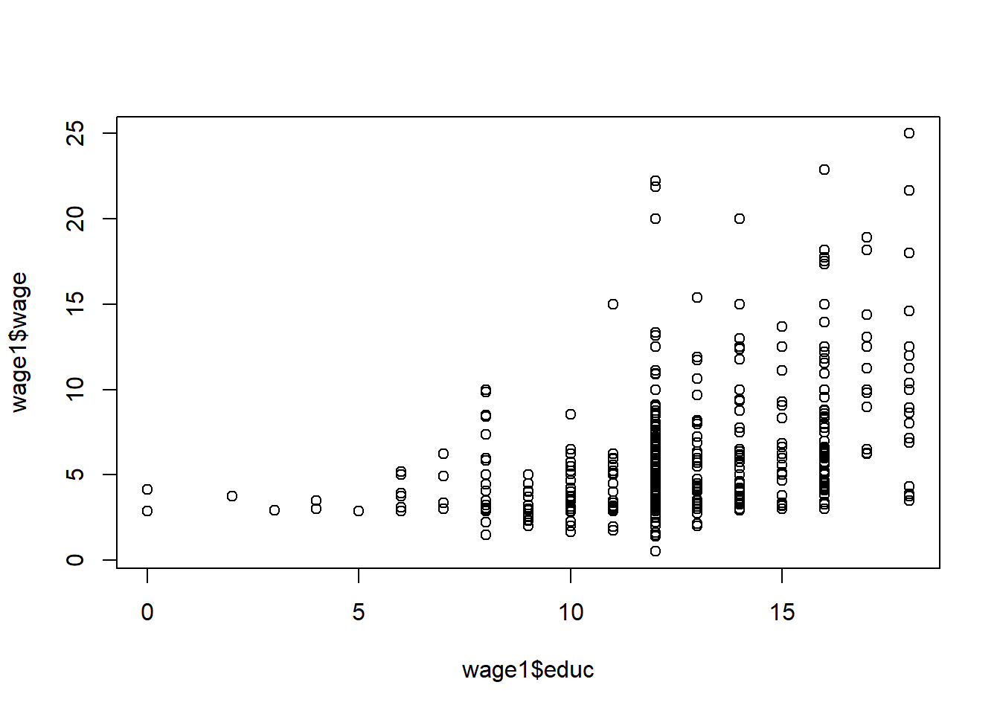
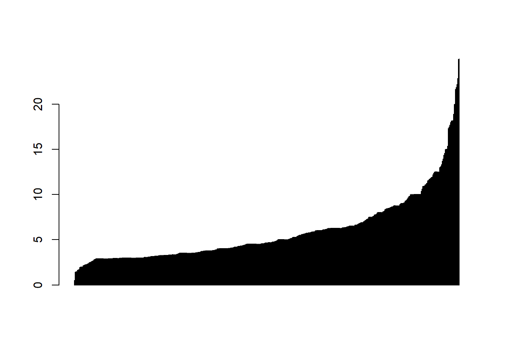
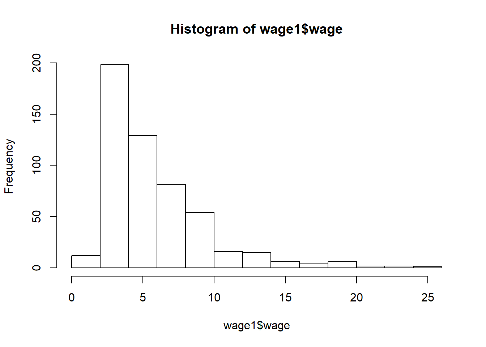
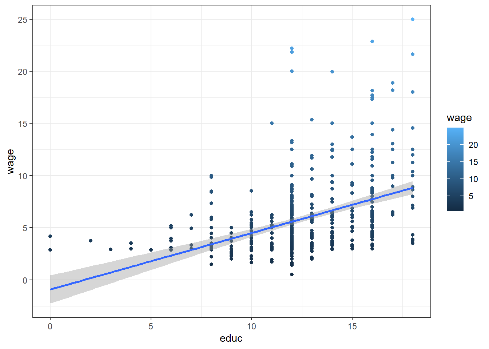

By now, I assume R is already installed on your computer. R is an open source software that runs on any popular operating system that can be downloaded here: (for Windows; for Mac OS; for Linux).
Vectors are fundamental R data structures. Vector holds the same primitive or atomic type of value in each slot. Lists in R, on the other hand, can hold different types in each slot. To create a vector or a list, one can use the “c” (for combine) command.
example_vector = c(10, 20, 30)
example_list = list(a = 10, b = 20, c = 30)Try the following commands:
example_vector## [1] 10 20 30print(example_vector)## [1] 10 20 30example_vector[2]## [1] 20example_vector[c(FALSE, TRUE, TRUE)]## [1] 20 30example_list## $a
## [1] 10
##
## $b
## [1] 20
##
## $c
## [1] 30example_list[2]## $b
## [1] 20example_list[c(TRUE, FALSE, TRUE)]## $a
## [1] 10
##
## $c
## [1] 30If the sequence of numbers in a vector follow a specific pattern, one can use one of the default commands. For example, if you want to create a vector containing values from 1 to 50, you can use simply the following command:
x = 1:50However, whenever you want the steps between values to be smaller or larger then unity (1), you can use the following command indicating the first, last value and the step size:
y1 = seq(from=1,to=50,by=2)
y2 = seq(1,50,2)In R, there are two values that one must distinguish. Null is an empty or length-zero vector. To create such a vector, one can simply write the following:
x1 = c()
x2 = NULLFor example, when one combines NULL with other values in vector, NULL essentially means do nothing or ignore. It is well-defined meaning you will not get an error when encountering NULL.
x3 = c(NULL, 5, c() )NA, on the other hand, indicates a missing value. It tells the researcher which values are missing. For example, try the following:
x4 = c(1, NA, 3)Do not confuse NA with NaN, which means invalid.
In R, TRUE and FALSE are reserved words denoting logical constraints. Using “==”, “>” and “<”, try the following commands:
y1==y2## [1] TRUE TRUE TRUE TRUE TRUE TRUE TRUE TRUE TRUE TRUE TRUE TRUE TRUE TRUE
## [15] TRUE TRUE TRUE TRUE TRUE TRUE TRUE TRUE TRUE TRUE TRUEc(1, 2, 5) <= c( 2, 2, 4)## [1] TRUE TRUE FALSEc(1, 2, 5) > c( 2, 2, 4)## [1] FALSE FALSE TRUEIf a researcher has a long command, she or he can break it up into multiple lines. For example, one can write the following:
x5 = 1 +
2
x6 = ( 1
+ 2 );As you probably noticed, semicolon is not necessary. However, many use semicolon to indicate the end of the statement. If one wants to use more than one command or function in one line, semicolon will separate the two statements.
Another useful command is cbind. It takes a sequence of vector, matrix or data-frame arguments and combine by columns or rows.
A=cbind(rep(5,7), 1:7)
A## [,1] [,2]
## [1,] 5 1
## [2,] 5 2
## [3,] 5 3
## [4,] 5 4
## [5,] 5 5
## [6,] 5 6
## [7,] 5 7A[2,1]## [1] 5B=rbind(2, 1:7)
B## [,1] [,2] [,3] [,4] [,5] [,6] [,7]
## [1,] 2 2 2 2 2 2 2
## [2,] 1 2 3 4 5 6 7In R, “data.frame” is the tabular data type and the most important. One can create the names for each column using very simple syntax. Make sure that the length of each column in a data.frame is the same. See the following:
x = c(1, 2, 3, 4, 5)
X = data.frame( q1 = x, q2 = 2*x )One can indicate the specific value to call in a vector or a data.frame or to change the value of that data point as can be seen below. In the brackets, the first number corresponds to the row and the second to the column. To call the data point in the third row value in the first column, on would use the following commands:
X[3,1]## [1] 3In R, it is very convenient to organize and store intermediate data. Check out the following example in which we sort the data, find cumulative sum and find a fraction of all cumulative revenues below. It is convenient to use something like “.” to store any temporary data only assigning it a more memorable name at the end after competing intermediate tasks.
data = data.frame(revenue = c(2, 1, 2), sort_key = c("b", "c", "a"), stringsAsFactors = FALSE)
. = data
. = .[order(.$sort_key), , drop = FALSE]
.$ordered_sum_revenue <- cumsum(.$revenue)
.$fraction_revenue_seen <- .$ordered_sum_revenue/sum(.$revenue)
result = .Similarly, one can use an R package to make their lives easier. However, make sure you read the documentation of the package. For example, to do the steps above one could use package dplyr with piped notation supplied by magittr. See below:
#install.packages("dplyr")
library(dplyr)
result <- data %>%
arrange(., sort_key) %>%
mutate(., ordered_sum_revenue = cumsum(revenue)) %>%
mutate(., fraction_revenue_seen = ordered_sum_revenue/sum(revenue))A lot of the work in R is done in vectors and data frames using the functions in the base R (you do not need to install and call a library for basic operations). See below:
D = data.frame(col1 = c(10, 15, 20), col2 = c(0, -5, -10))
D$col3 = D$col1 + D$col2
D$col4 = D$col1 * D$col2
print(D)## col1 col2 col3 col4
## 1 10 0 10 0
## 2 15 -5 10 -75
## 3 20 -10 10 -200Usually, you will use data that is either in some local directory in your computer or is in some directory online. With R, it is easy to import either of these. For example, you can use the following commands to download a dataset from a specific URL:
my_data_1 = read.csv("http://archive.ics.uci.edu/ml/machine-learning-databases/wine/wine.data", header = FALSE)
my_data_2 = read.table("http://assets.datacamp.com/course/dasi/present.txt", header = TRUE)
print(my_data_2)## year boys girls
## 1 1940 1211684 1148715
## 2 1941 1289734 1223693
## 3 1942 1444365 1364631
## 4 1943 1508959 1427901
## 5 1944 1435301 1359499
## 6 1945 1404587 1330869
## 7 1946 1691220 1597452
## 8 1947 1899876 1800064
## 9 1948 1813852 1721216
## 10 1949 1826352 1733177
## 11 1950 1823555 1730594
## 12 1951 1923020 1827830
## 13 1952 1971262 1875724
## 14 1953 2001798 1900322
## 15 1954 2059068 1958294
## 16 1955 2073719 1973576
## 17 1956 2133588 2029502
## 18 1957 2179960 2074824
## 19 1958 2152546 2051266
## 20 1959 2173638 2071158
## 21 1960 2179708 2078142
## 22 1961 2186274 2082052
## 23 1962 2132466 2034896
## 24 1963 2101632 1996388
## 25 1964 2060162 1967328
## 26 1965 1927054 1833304
## 27 1966 1845862 1760412
## 28 1967 1803388 1717571
## 29 1968 1796326 1705238
## 30 1969 1846572 1753634
## 31 1970 1915378 1816008
## 32 1971 1822910 1733060
## 33 1972 1669927 1588484
## 34 1973 1608326 1528639
## 35 1974 1622114 1537844
## 36 1975 1613135 1531063
## 37 1976 1624436 1543352
## 38 1977 1705916 1620716
## 39 1978 1709394 1623885
## 40 1979 1791267 1703131
## 41 1980 1852616 1759642
## 42 1981 1860272 1768966
## 43 1982 1885676 1794861
## 44 1983 1865553 1773380
## 45 1984 1879490 1789651
## 46 1985 1927983 1832578
## 47 1986 1924868 1831679
## 48 1987 1951153 1858241
## 49 1988 2002424 1907086
## 50 1989 2069490 1971468
## 51 1990 2129495 2028717
## 52 1991 2101518 2009389
## 53 1992 2082097 1982917
## 54 1993 2048861 1951379
## 55 1994 2022589 1930178
## 56 1995 1996355 1903234
## 57 1996 1990480 1901014
## 58 1997 1985596 1895298
## 59 1998 2016205 1925348
## 60 1999 2026854 1932563
## 61 2000 2076969 1981845
## 62 2001 2057922 1968011
## 63 2002 2057979 1963747data(wage1, package='wooldridge')
class(wage1)## [1] "data.frame"To see how the data looks, you can simply call to see the first few values by using the following command:
head(wage1)## wage educ exper tenure nonwhite female married numdep smsa northcen
## 1 3.10 11 2 0 0 1 0 2 1 0
## 2 3.24 12 22 2 0 1 1 3 1 0
## 3 3.00 11 2 0 0 0 0 2 0 0
## 4 6.00 8 44 28 0 0 1 0 1 0
## 5 5.30 12 7 2 0 0 1 1 0 0
## 6 8.75 16 9 8 0 0 1 0 1 0
## south west construc ndurman trcommpu trade services profserv profocc
## 1 0 1 0 0 0 0 0 0 0
## 2 0 1 0 0 0 0 1 0 0
## 3 0 1 0 0 0 1 0 0 0
## 4 0 1 0 0 0 0 0 0 0
## 5 0 1 0 0 0 0 0 0 0
## 6 0 1 0 0 0 0 0 1 1
## clerocc servocc lwage expersq tenursq
## 1 0 0 1.131402 4 0
## 2 0 1 1.175573 484 4
## 3 0 0 1.098612 4 0
## 4 1 0 1.791759 1936 784
## 5 0 0 1.667707 49 4
## 6 0 0 2.169054 81 64To see if there are any anomalies or outliers, you can run quick summary of the whole data.frame by executing the following:
summary(wage1)## wage educ exper tenure
## Min. : 0.530 Min. : 0.00 Min. : 1.00 Min. : 0.000
## 1st Qu.: 3.330 1st Qu.:12.00 1st Qu.: 5.00 1st Qu.: 0.000
## Median : 4.650 Median :12.00 Median :13.50 Median : 2.000
## Mean : 5.896 Mean :12.56 Mean :17.02 Mean : 5.105
## 3rd Qu.: 6.880 3rd Qu.:14.00 3rd Qu.:26.00 3rd Qu.: 7.000
## Max. :24.980 Max. :18.00 Max. :51.00 Max. :44.000
## nonwhite female married numdep
## Min. :0.0000 Min. :0.0000 Min. :0.0000 Min. :0.000
## 1st Qu.:0.0000 1st Qu.:0.0000 1st Qu.:0.0000 1st Qu.:0.000
## Median :0.0000 Median :0.0000 Median :1.0000 Median :1.000
## Mean :0.1027 Mean :0.4791 Mean :0.6084 Mean :1.044
## 3rd Qu.:0.0000 3rd Qu.:1.0000 3rd Qu.:1.0000 3rd Qu.:2.000
## Max. :1.0000 Max. :1.0000 Max. :1.0000 Max. :6.000
## smsa northcen south west
## Min. :0.0000 Min. :0.000 Min. :0.0000 Min. :0.0000
## 1st Qu.:0.0000 1st Qu.:0.000 1st Qu.:0.0000 1st Qu.:0.0000
## Median :1.0000 Median :0.000 Median :0.0000 Median :0.0000
## Mean :0.7224 Mean :0.251 Mean :0.3555 Mean :0.1692
## 3rd Qu.:1.0000 3rd Qu.:0.750 3rd Qu.:1.0000 3rd Qu.:0.0000
## Max. :1.0000 Max. :1.000 Max. :1.0000 Max. :1.0000
## construc ndurman trcommpu trade
## Min. :0.00000 Min. :0.0000 Min. :0.00000 Min. :0.0000
## 1st Qu.:0.00000 1st Qu.:0.0000 1st Qu.:0.00000 1st Qu.:0.0000
## Median :0.00000 Median :0.0000 Median :0.00000 Median :0.0000
## Mean :0.04563 Mean :0.1141 Mean :0.04373 Mean :0.2871
## 3rd Qu.:0.00000 3rd Qu.:0.0000 3rd Qu.:0.00000 3rd Qu.:1.0000
## Max. :1.00000 Max. :1.0000 Max. :1.00000 Max. :1.0000
## services profserv profocc clerocc
## Min. :0.0000 Min. :0.0000 Min. :0.0000 Min. :0.0000
## 1st Qu.:0.0000 1st Qu.:0.0000 1st Qu.:0.0000 1st Qu.:0.0000
## Median :0.0000 Median :0.0000 Median :0.0000 Median :0.0000
## Mean :0.1008 Mean :0.2586 Mean :0.3669 Mean :0.1673
## 3rd Qu.:0.0000 3rd Qu.:1.0000 3rd Qu.:1.0000 3rd Qu.:0.0000
## Max. :1.0000 Max. :1.0000 Max. :1.0000 Max. :1.0000
## servocc lwage expersq tenursq
## Min. :0.0000 Min. :-0.6349 Min. : 1.0 Min. : 0.00
## 1st Qu.:0.0000 1st Qu.: 1.2030 1st Qu.: 25.0 1st Qu.: 0.00
## Median :0.0000 Median : 1.5369 Median : 182.5 Median : 4.00
## Mean :0.1407 Mean : 1.6233 Mean : 473.4 Mean : 78.15
## 3rd Qu.:0.0000 3rd Qu.: 1.9286 3rd Qu.: 676.0 3rd Qu.: 49.00
## Max. :1.0000 Max. : 3.2181 Max. :2601.0 Max. :1936.00To plot data, one can use either basic commands such as plot, barplot, histogram.
plot(wage1$educ,wage1$wage)
barplot(sort(wage1$wage))
hist(wage1$wage)
One can also use one of the more advanced commands from other popular packages such as ggplot2. See example below. See how to use ggplot2 package here.
#install.packages("ggplot2")
library(ggplot2)
ggplot(wage1, aes(educ, wage)) +
geom_point(aes(color=wage)) +
geom_smooth(method ="lm") +
coord_cartesian() +
scale_color_gradient() +
theme_bw()
References
Zumel, N., & Mount, J. (2014). Practical Data Science With R. Manning Publications Co.
Wooldridge, J. (2019). Introductory econometrics: a modern approach. Boston, MA: Cengage.